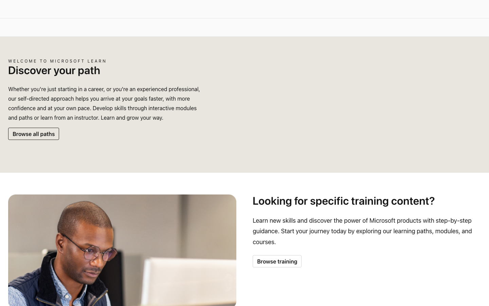
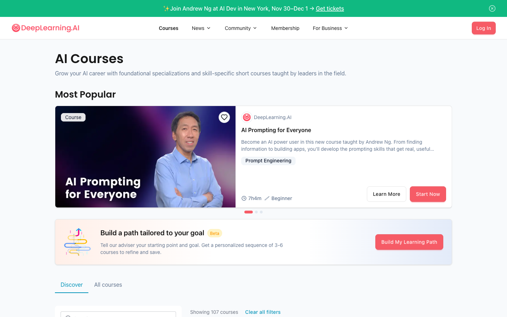

Microsoft Learn
打开官网 ↗首页用“具体训练内容”和“职业目标”两条入口解释学习意图，课程卡直接显示类型、时长、角色和难度。
可借鉴
- 把任务入口写成用户目标，而不是产品栏目。
- 继续学习卡保留进度和最近位置；知识地图按钮作为视角切换。
- 用课程模块、学习路线、计划等明确类型，降低概念混淆。
不照搬：内容类型过多时容易把首页变成资源目录，我们仍以当前任务为主。
把学习入口、课程预览、白板学习、在线 IDE、AI 学伴、知识版图与开发者贡献拆开研究。每个参考都保留官方链接、实页截图、可借鉴模式与不建议照搬的部分。
主参考代表当前最值得吸收的模式，补充参考用于校正边界，避免照搬单一产品。
| 场景 | 主参考 | 最强模式 | 对当前方案的机会 |
|---|---|---|---|
| 首页学习入口 | Microsoft Learn ↗ | 按目标、角色和时长降低选择成本 | “继续学习”旁直接进入个人知识地图，保留当前任务上下文 |
| 课程预览 | DeepLearning.AI ↗ | 结果、难度、时长与课程形态同时可见 | 先回答为什么学，再展开课程模块—单元—课节 |
| 白板学习 | Brilliant ↗ | 解释与交互反馈紧贴当前知识对象 | 板书保持原位，临时解释层围绕选中内容出现并可收起 |
| 在线 IDE | HiDevLab ↗ | 环境、镜像、算力与数据保留规则前置 | IDE 固定在画布工作区，AI 学伴贴合右侧，运行上下文自动带入 |
| AI 学伴 | Khanmigo ↗ | 通过追问引导理解，而不是直接给答案 | 问答、可视化解释、笔记和计划共享当前板书上下文 |
| 知识版图 | roadmap.sh ↗ | 从领域全景逐步下钻到可行动节点 | 三大领域岛屿 + 分区知识网络 + 状态与推荐路线叠加 |
| 开发者贡献 | Kaggle Benchmarks ↗ | 贡献内容可以复现、比较、排行并追溯 | 经验贴升级为带环境、指标、证据和审核状态的贡献资产 |
首页同时承担继续任务、发现内容与进入个人知识全景的职责。
当前问题：如何让“继续学习”和“打开我的知识地图”互相补充，而不是做成两个并列的大楼层？

首页用“具体训练内容”和“职业目标”两条入口解释学习意图，课程卡直接显示类型、时长、角色和难度。
不照搬：内容类型过多时容易把首页变成资源目录，我们仍以当前任务为主。

用一句目标描述和角色路线列表帮助用户快速选择，同时把路线、项目创意与学习内容分成不同入口。
不照搬：线性路线不能代表昇腾密集且互相依赖的知识网络。
预览页需要同时回答适不适合、会学到什么、如何验证和从哪里开始。
当前问题：如何呈现课程模块—单元—课节层级，同时保持用户对最终能力和验证结果的理解？

课程目录把类型、难度、讲师、合作方和学习结果放在同一个判断面，先帮助用户筛选，再进入详情。
不照搬：营销式大图会挤压复杂课程结构，当前预览页继续去除装饰性 Banner。
官方明确区分 Plan、Learning Path、Module 和 Unit，每一级对应不同的结果与内容粒度。
不照搬：“学习阶段”容易被理解为覆盖整条学习路径，当前统一使用“课程模块”。
画布承载老师编排的文字、图片、GIF、思维导图与 IDE，AI 生成内容需要保持可区分。
当前问题：怎样让用户随时暂停、提问、查看可视化解释，又不破坏板书的自然排版和课程节奏？

把解释、可视化模型、问题与即时反馈连续组织，让用户通过操作构建理解。
不照搬：昇腾课程需要保留完整工程上下文，不能切成过多脱离环境的小游戏。

学习助手强调引导思考，并将对话绑定到正在学习的内容，而非提供无上下文的通用聊天。
不照搬：不让学伴长期占据画布主区域，右侧使用可收起浮窗。
IDE 进入白板后应成为稳定工作区，运行结果、终端和 AI 学伴围绕实践任务协作。
当前问题：如何兼顾代码、终端、运行结果与课程上下文，并支持用户自由调整面板？

在进入环境前说明算力规格、镜像、资源调度、闲置关机与数据保留规则，降低使用风险。
不照搬：无需保留完整 WebIDE 的资源管理侧栏，课程场景只显示任务所需面板。

以仓库配置创建一致环境，让用户在浏览器或本地编辑器中恢复同一工程上下文。
不照搬：通用 IDE 的扩展和账户功能会增加噪声，学习模式需做任务化裁剪。
同一学伴在首页、课程预览、白板、IDE 和知识地图中共享个人状态与当前上下文。
当前问题：怎样统一问答、能力缺口、推荐路线、笔记和计划，又不让面板显得过重？
核心价值是“引导用户自己得出答案”，并通过对话持续感知学习上下文。
不照搬：用户可以直接要求答案，但系统应同时展示推理依据与可验证步骤。
导师能看见用户正在处理的问题，并通过逐步提示定位卡点，减少重复描述上下文。
不照搬：能力同心环属于全局诊断，不应长期占据白板中的对话区域。
知识网络并非线性课程清单；课程只是覆盖知识节点并形成实践证据的资源。
当前问题：如何同时表达领域归属、非线性依赖、个人状态、课程覆盖和下一条推荐路线？
从角色或技能入口进入路线，节点之间有建议顺序，同时允许用户跳转和标记完成。
不照搬：不把所有节点强行排成树；实线、虚线与跨区连接表达不同依赖。
路线由模块组合，内容可以按目标重新编排；同一模块可服务不同路线。
不照搬：官方课程不作为独立知识区域，只作为节点的覆盖与学习资源。
贡献楼层负责发现优质实践；独立页面负责验证闭环、积分解释与领域榜单。
当前问题：如何让经验回填经过审核与环境复现后获得积分，并清楚说明用户为什么上榜？

贡献者定义任务、数据和断言，运行结果形成可追溯版本，并通过榜单、图表和讨论进行比较。
不照搬：不能只按单一性能分数排行，还要奖励可复用性、解释质量和持续维护。

将开放讨论与代码任务区分，并通过分类、标签、置顶、最佳回答和洞察数据沉淀社区知识。
不照搬：自由讨论不直接等同于已验证经验，公开前需要结构化审核链路。
这些决定来自跨竞品共同模式，并结合昇腾知识密集、实践依赖环境和社区贡献需要复现的特点。
知识地图是继续卡片后的视角切换按钮，复杂内容进入全屏页面。
课程模块—单元—课节—课程要点逐级展开，避免与跨课程学习路线混淆。
AI 解释、笔记和计划围绕当前板书与代码出现，不写回老师原始板书。
经验回填经过审核、环境复现和引用后计分，榜单明确展示每一笔得分原因。
研究说明：截图仅用于内部产品研究与界面比较，版权归各产品所有。页面表现与功能会变化，判断以采集日期和官方链接为准。后续新增竞品时，应先确定它补充哪个场景和哪条判断，再增加卡片，避免堆积无结论的截图。